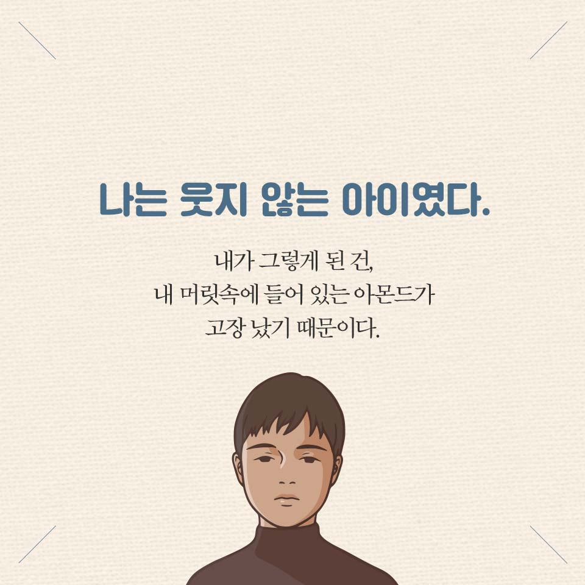

책
책
**아몬드

주인공의 상황이 우리 사회를 거울처럼 보여주고 있다는 생각이 들었다. 타인에 대해 무관심한 우리, 점점 공감능력이 떨어지고 자신만 생각하는 사람이 늘어가는 우리 사회. 다만 이 소설의 주인공과 다른 점은 우리는 일부러 귀를 닫고 눈을 안본다는 점이고 이 소설의 주인공은 귀를 열고 눈을 보고 싶어도 잘 안된다는 점이 다르다고 할 수 있다. 나는 이 책을 통해 윤재가 노력하여 변화했듯이 우리도 조금만 옆의 구성원에게 관심을 기울인다면 우리 사회도 바뀔 수 있다는 점을 저자가 말하고 있다고 생각한다. 멀리 볼 것이 아니라 바로 옆 이웃, 그리고 가족에게 따뜻한 말 한마디 그리고 공감을 통해 서로의 아픔을 보듬어 줄 수 있는 사회가 되길 바라며 이 책의 리뷰를 마친다.
**모모
 책을 읽고 오늘 하루 시간은 어땠는지, 나의 시간을 잘 사용하고 있는지, 그냥 흘려보내고 있는지,일에만 매달려 소중한 사람을 소홀히 하지는 않았는지, 생각해 보게 됩니다. 일만 잘하면 사랑하는 사람이 행복할 거라는 바보같은 생각. 옆에만 있으면 다 된다는 생각,
많은 생각에 생각에 꼬리가 붙었네요. 인생에 기준을 잡아야 될 것 같아요.
내가 행복해지기 위해, 사랑하는 사람을 위해, 무엇을 선택하고 버려야 할지, 시간을 지키기 위해 용감해져야 겠습니다.
책을 읽고 오늘 하루 시간은 어땠는지, 나의 시간을 잘 사용하고 있는지, 그냥 흘려보내고 있는지,일에만 매달려 소중한 사람을 소홀히 하지는 않았는지, 생각해 보게 됩니다. 일만 잘하면 사랑하는 사람이 행복할 거라는 바보같은 생각. 옆에만 있으면 다 된다는 생각,
많은 생각에 생각에 꼬리가 붙었네요. 인생에 기준을 잡아야 될 것 같아요.
내가 행복해지기 위해, 사랑하는 사람을 위해, 무엇을 선택하고 버려야 할지, 시간을 지키기 위해 용감해져야 겠습니다.
**달러구트 꿈 백화점
 항상 꿈의 가치는 손님에게 달려 있다고 하셨는데....(생략) 그렇지, 과거의 어렵고 힘든 일 뒤에는, 그걸 이겨냈던 자신의 모습도 함께 존재한다는 사실. 우린 그걸 스스로 상기할 수 있도록 도와야 한단다
다양한 삶의 형태에 놓여있는 사람들의 꿈의 이야기를 통해 삶은 과거에 얽매여있지 말고 알수 없는 미래를 부여잡지 말고 현실에 충실하라고 조언한다
항상 꿈의 가치는 손님에게 달려 있다고 하셨는데....(생략) 그렇지, 과거의 어렵고 힘든 일 뒤에는, 그걸 이겨냈던 자신의 모습도 함께 존재한다는 사실. 우린 그걸 스스로 상기할 수 있도록 도와야 한단다
다양한 삶의 형태에 놓여있는 사람들의 꿈의 이야기를 통해 삶은 과거에 얽매여있지 말고 알수 없는 미래를 부여잡지 말고 현실에 충실하라고 조언한다